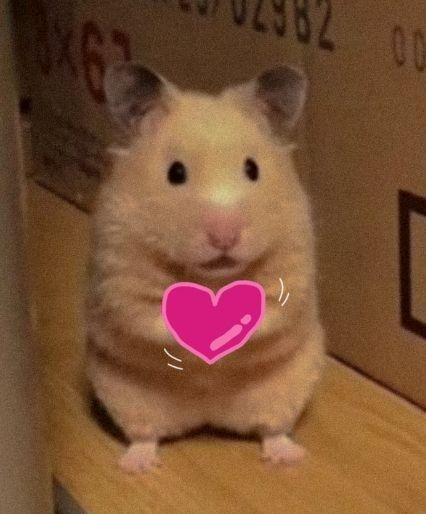
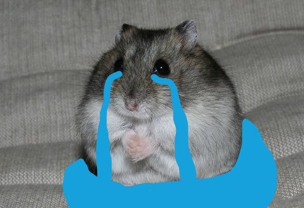
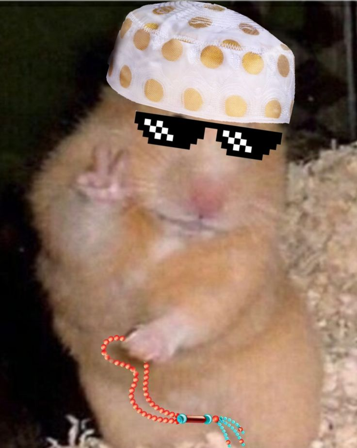

Welcome back to day 2
Last time Hmar get to know Hmara has a BPD.They talk alot day by day. But one day HMAR noticed something strange . Sometimes HMARA do ignore HMAR text that hmar dont like it but he still had some soft spot for her so he kept it up with HMARA. The strange thing HMAR noticed about HMARA was that they were talking like normal or funny thing and suddenly out of nowhere HMARA gets mad like crazzyyy for no reason . HMAR often went hours to thinking if he said something wrong or bad HMAR was so bad at english that makes him thing thrice before saying something difficult or serious .But the thing i was amused of was the sudden getting angry of HMAARA. When she gets angry HMAR tries diffrent ways and say sorry for times after times that is pretty thinkable that if HMAR Sorried atleast twice to his EX- HMAR might be in a relationship till now JAJAJAJAJ, And then after all of this Hmara told and explained all about. But the most unique and interesting thing Hmar found out about BPD is the mood swings of HMARA. Right now HMARA
LOOK LIKE THIS
The next moment HAMARA look like this

And after sometime HMARA mood be like
AND SOMETIMES
And the worst thing is sometimes HMARA gets so sad for no reason and don't want to talk to anyone, not even to HMAR , HMAR lives very very far from HMARA so he cant reach HMARA home so he kepp texting and texting HMARA like 2000 texts a time but still no respond from HMARA 😭 So sad NAH? Look this is how HMARA looks like in her sad period .
You might be wondering if this is HMARA then how does HMAR look like? Well I look like this:
